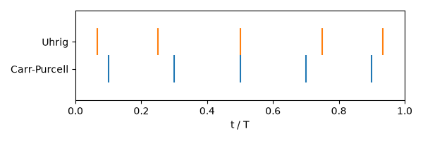
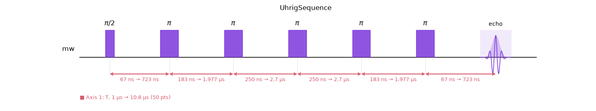

Note
Go to the end to download the full example code.
Uhrig Decoupling Sequence¶
The Uhrig dynamical decoupling (UDD) sequence uses n refocusing pulses
placed non-uniformly over the total evolution time T. The j-th pulse is
placed at
t_j = T \sin^2\left(\frac{\pi j}{2n + 2}\right), \quad j = 1, \dots, n
and the echo forms at T.
import pyepr as epr
import numpy as np
import matplotlib.pyplot as plt
epr.set_waveform_precision(1)
Define the total evolution time T as a virtual parameter, this is
stepped but never passed to the spectrometer itself.
n = 5 # Number of refocusing pulses
T = epr.Parameter(
"T", 1000, step=200, dim=50, unit="ns",
description="Total evolution time", virtual=True)
Build the sequence. Each refocusing pulse position is a fixed fraction of
T, so its step is generally not a multiple of the waveform precision.
Rounding the step would accumulate errors along the axis, so instead each
position is given as an explicit (non-uniform) axis, rounded point by point,
and linked to the T axis.
The same phase cycle as the Carr-Purcell sequence is used. Shifting the phase of a refocusing pulse by \phi shifts the echo phase by 2\phi, which sets the detection signs.
Pulse |
Phases |
Detection signs |
|---|---|---|
\pi/2 |
+x, -x |
+, - |
\pi_1 to \pi_{n-2} |
+x, +y, -x, -y |
+, -, +, - |
\pi_{n-1} |
+x, -x |
+, + |
\pi_n |
+x |
+ |
The phase cycles are combined multiplicatively, giving 2 \times 4^{n-2} \times 2 steps in total.
seq = epr.Sequence(
name="UhrigSequence", B=12127, freq=34, reptime=3e3, averages=1, shots=10)
seq.addPulse(epr.RectPulse(
t=0, tp=16, freq=0, flipangle=np.pi/2,
pcyc={"phases": [0, np.pi], "dets": [1, -1]}))
for j in range(1, n + 1):
if j == n:
pcyc = {"phases": [0], "dets": [1]}
elif j == n - 1:
pcyc = {"phases": [0, np.pi], "dets": [1, 1]}
else:
pcyc = {"phases": [0, np.pi/2, np.pi, -np.pi/2], "dets": [1, -1, 1, -1]}
t_j = epr.Parameter(
f"t{j}", np.round(T.get_axis() * np.sin(np.pi * j / (2 * n + 2))**2),
unit="ns", link=T, description=f"Position of refocusing pulse {j}")
seq.addPulse(epr.RectPulse(
t=t_j, tp=32, freq=0, flipangle=np.pi, pcyc=pcyc))
seq.addPulse(epr.Detection(t=T, tp=512))
seq.evolution([T])
print(seq)
print(f"Number of phase cycle steps: {seq.pcyc_dets.shape[0]}")
###############################################################################
PyEPR Sequence Definition
###############################################################################
Sequence Parameters:
Name Value Unit Description
B 12127 Gauss The static B0 field for the experiment
freq 34 GHz The central frequency of the sequence
reptime 3000 us The shot repetition time
averages 1 None The number of averages to perform.
shots 10 None The number of shots per scan.
det_window 128 None The length of the default detection gate
time 0:6:24 HH:MM:SS Estimated sequence run time
Events (Pulses, Delays, etc...):
iD t (ns) tp (ns) scale type Phase Cycle
0 0 16 None RectPulse [+(+x) -(-x)]
1 67 32 None RectPulse [+(+x) -(+y) +(-x) -(-y)]
2 250 32 None RectPulse [+(+x) -(+y) +(-x) -(-y)]
3 500 32 None RectPulse [+(+x) -(+y) +(-x) -(-y)]
4 750 32 None RectPulse [+(+x) +(-x)]
5 933 32 None RectPulse [+(+x)]
6 1000 512 N/A Detection
Progression:
Pulse Prog. Axis Parameter Step Dim Unit
1 0 t Var 50 ns
2 0 t 50 50 ns
3 0 t 100 50 ns
4 0 t 150 50 ns
5 0 t Var 50 ns
6 0 t 200 50 ns
###############################################################################
Built by PyEPR Version: 1.2
###############################################################################
Number of phase cycle steps: 256
Plot the pulse positions as a fraction of T, compared to a Carr-Purcell
sequence with the same number of pulses.
udd = [seq.pulses[j].t.value / T.value for j in range(1, n + 1)]
cp = [(2 * j - 1) / (2 * n) for j in range(1, n + 1)]
plt.figure(figsize=(6, 2))
plt.eventplot([cp, udd], lineoffsets=[0, 1], colors=["C0", "C1"])
plt.yticks([0, 1], ["Carr-Purcell", "Uhrig"])
plt.xlim(0, 1)
plt.xlabel("t / T")
plt.tight_layout()

seq.draw()

<Figure size 1488.75x277 with 1 Axes>
Total running time of the script: (0 minutes 0.230 seconds)